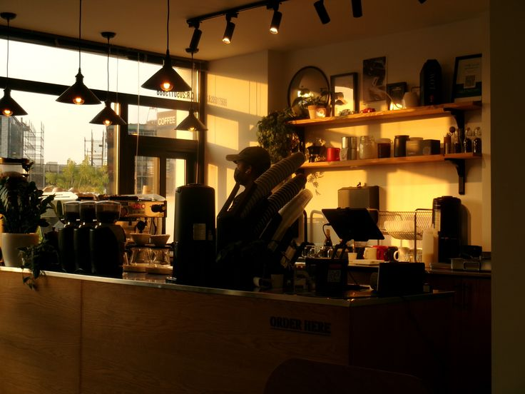
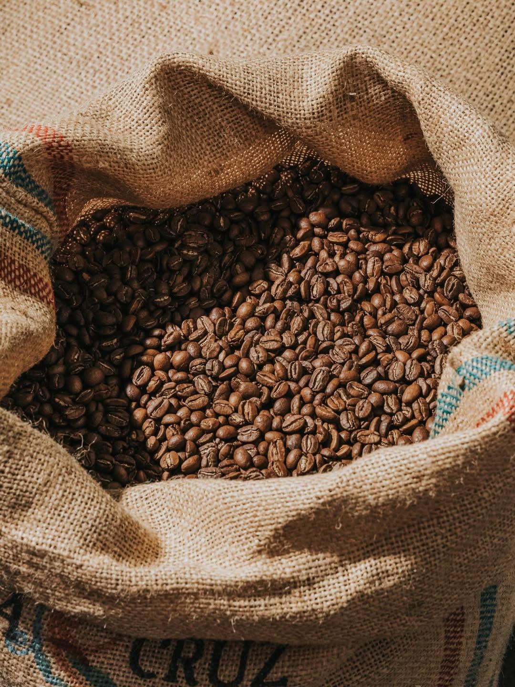
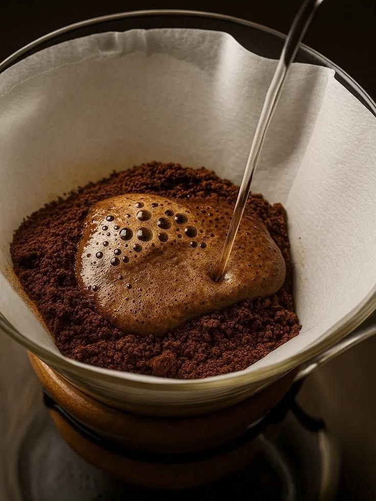
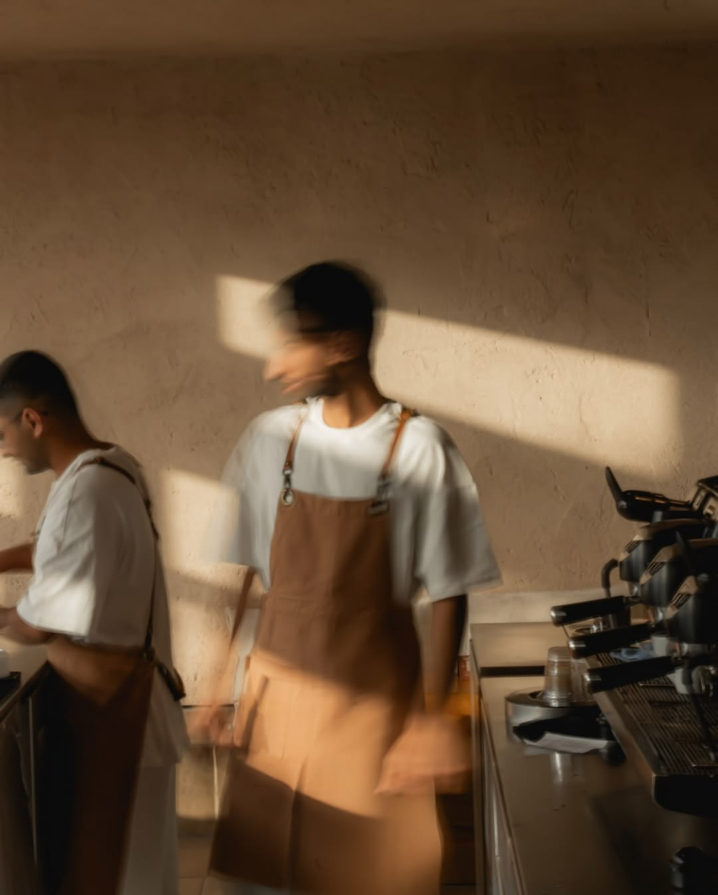

Our Story
A small place, built slowly, for coffee taken slowly.
福 — fuku — is the Japanese word for good fortune. It's also the kind of thing you can't manufacture. So we made a room where it might feel at home, and got on with making coffee.

What we believe
Slow coffee
Nothing here is rushed — not the roast, not the brew, not you. Drinks are made one at a time by someone paying attention.
Quiet spaces
No music turned up to fill the silence. Just filtered light, a few good chairs, and the sound of the machine.
Honest materials
Plaster that shows the trowel. Teak that shows its grain. Stone that will still be here long after we are.

Beans
Bought carefully, roasted for sweetness.
We work with a small number of importers who can tell us the name of the farm, the altitude, and the year the trees were planted. Our house espresso is a seasonal blend built around chocolate and stone fruit. The pour-over bar rotates through single origins we're excited about — usually washed coffees from Ethiopia, Colombia and Guatemala, occasionally something stranger.
Everything is roasted light-to-medium and rested for at least a week before it reaches the grinder. We'd rather serve last month's coffee than this morning's.

Craft
Weighed, timed, and then left alone.
Every cup starts on a scale. We dial in the espresso each morning and again whenever the weather changes, which in the Maldives is often. Milk is steamed to just below hot, so you can taste the coffee through it. Pour-overs get a proper bloom and an unhurried draw-down.
None of this is complicated. It just takes a little longer than most people are used to waiting. We think it's worth it, and we hope you will too.
The Owner
Aain Husham
Founder · Fuku Coffee, Hulhumalé
Aain grew up around Malé's tea shops, but somewhere between surfing, chasing good coffee, and getting a suspiciously soft Korean haircut, he decided to open Fuku.
He still works the bar most mornings, mostly making coffee, talking nonsense, and pretending the haircut wasn't the real reason he started the café.
“So, a lot of people ask me, ‘Why did you open a café?’ Honestly, I don't even know how to explain it. One day I was just sitting there thinking at the line-up at Raalhugandu, ‘You know what? I should open a café.’ And the next thing I knew, I was signing papers, buying coffee machines, and somehow became a café owner. Zero planning. Just vibes and questionable decisions.”
— Aain Husham

People
A small team that stays.
There are five of us behind the bar. Everyone trains on everything — grinder, machine, pour-over bar, pastry case — and everyone gets a say in what we buy. We keep the team small so the person making your coffee is likely to remember how you take it.
If you have questions about what's in the cup, ask. Talking about coffee is one of the few things we'll happily do quickly.
Join a cupping session